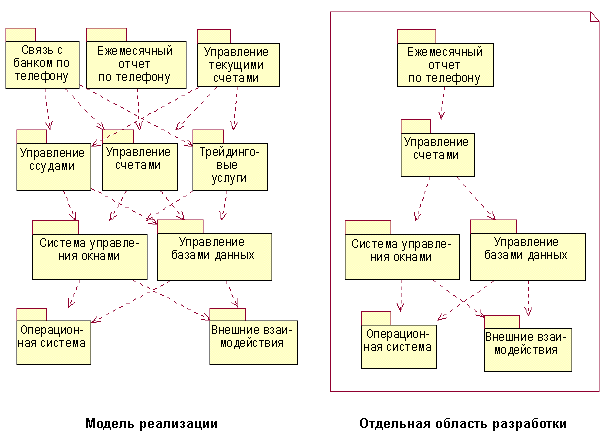
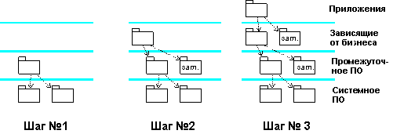

| Концепция: Рабочие области разработки и интеграции |
 |
|
| Связанные элементы |
|---|
|
Как правило, в создании системы принимают участие несколько одновременно работающих коллективов разработчиков. Для такой организации труда нужны несколько рабочих областей:
Рабочая область разработкиОтдельные разработчики пользуются рабочими областями разработки, в которых они реализуют подсистемы и другие элементы, находящиеся под их ответственностью. Для компиляции, компоновки, выполнения и тестирования кода подсистемы нужны другие компоненты системы. Как правило, разработчикам не нужна система целиком для разработки своих подсистем. Обычно бывает достаточно подсистем, необходимых для компиляции, компоновки и выполнения подсистемы в рабочей области разработки. Эти дополнительные подсистемы не обязательно должны находиться в виде физических копий в индивидуальной рабочей области разработчика. Вместо этого они могут находиться в общем внутреннем хранилище выпущенных подсистем. Точное расположение подсистем указывается при компоновке продукта в специальном файле, например makefile. Пример: Подсистема Monthly Account Telephone (в банковской системе) нуждается в подсистемах, которые явно или неявно импортируются в нее при компиляции, компоновке и выполнении ее внутренних элементов. В данном случае разработчикам подсистемы Monthly Account Telephone нужны шесть из десяти подсистем.  Рабочая область разработки, которой пользуются разработчики подсистемы Monthly Account Telephone Рабочая область интеграции для коллективаИногда над одной подсистемой работают несколько разработчиков. В такой ситуации элементы, разработанные отдельными разработчиками, необходимо интегрировать в подсистему перед тем, как передать подсистему на интеграцию в систему. Интеграция элементов, разработанных членами группы, осуществляется в рабочей области интеграции подсистемы, предназначенной специально для этого. Один из разработчиков выступает в роли интегратора и отвечает за функционирование и производительность рабочей области интеграции. Рабочая область интеграции для интеграторов на уровне системыИнтеграторы системы пользуются рабочей областью, в которой они могут компоновать элементы и подсистемы и создавать компиляции для тестирования интеграции.  Рабочая область интеграции на уровне системы, в которой интеграция осуществляется на уровне подсистем |
© Copyright IBM Corp. 1987, 2006. Все права защищены.. |